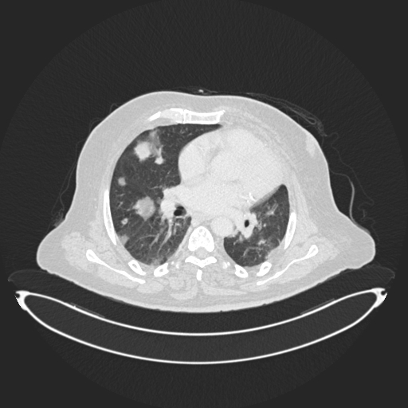

Lung cancer detection research · Not a clinical diagnosis

ORIGINAL DATASET IMAGE / IQ-OTH/NCCD Dataset label: malignant · Not a model-generated image
What this can tell you
This experimental model predicts a dataset class. It cannot establish whether you have cancer or how serious it is. Cancer stage and severity are not assessed. A normal result does not rule out cancer; a clinician must interpret real medical scans.
01 / IMAGE WORKSPACE
Explore your CT slice
Connecting to model…
Or select a real dataset example below.
Preview stays in your browser. Running the model sends the image to this site's API, where it is processed in memory and not saved by the application. Use de-identified images only.
MODEL OUTPUT
Ready when you are
Select an image to begin. Results come from saved model weights, not scripted sample answers.
UNDERSTANDING YOUR RESULT
Malignant class scoreCNN output score, not personal cancer probability
How did the model choose this result?
This is a description of the classifier's decision rule. It does not identify a tumor location or explain a medical cause.
02 / ORIGINAL IMAGES
Try real CT examples
Unmodified JPEGs from the held-out test split. Labels come from the dataset; predictions may differ.
These six examples were selected by filename, not by whether the model gets them right. Download an image and upload it again to demonstrate real inference.
03 / OPEN RESEARCH
Know what is behind the result.
One real dataset
IQ-OTH/NCCD CT images, published by hamdalla alyasriy and Muayed AL-Huseiny. The downloaded release contains 1,097 JPEGs. No synthetic images are used in this model's training. The split has 657 training, 220 validation and 220 test images.
Source: author's linked GitHub mirror. DOI: 10.17632/bhmdr45bh2.4. Original images are unchanged; resizing and cropping happen only inside model preprocessing.
A real deep-learning model
A CNN with three convolution blocks learns image features from 64 × 64 grayscale CT crops. PyTorch trains 285,699 parameters. The lowest validation loss selects epoch 12 of 40. ONNX Runtime restores the saved network for inference.
Loading evaluation…
Patient IDs are not supplied. Exact and perceptually similar images are grouped, but patient overlap may remain. These numbers are exploratory image-level results, not clinical or patient-independent accuracy.
CT means computed tomography. A scanner uses X-rays from many angles to reconstruct cross-sectional pictures, like slices through the chest. LungLens takes one axial chest CT slice exported as JPEG, PNG or WEBP. The training images are original dataset JPEGs.
Chest X-ray: a projection image with structures overlapping. CT: cross-sectional slices that separate structures by depth. DICOM: the medical file format that can include image data and scanning metadata. JPEG/PNG: exported pictures without the full CT study or reliable Hounsfield-unit information. An ordinary phone photo, pathology slide or chest X-ray is outside this model's training task.
Website: HTML, CSS and JavaScript. Training: Python and PyTorch. Image processing: Pillow and NumPy. Inference: saved ONNX network and ONNX Runtime. Hosting: Vercel Python functions and a static frontend. Version control: GitHub.
The server converts the image to grayscale, crops 8% from each edge, resizes it to 64 × 64 and scales pixel values to 0–1. Three convolution/ReLU/max-pooling blocks learn image features. Dense layers produce three outputs. Softmax turns these into scores totaling 100%. The highest score selects the predicted category.
The earlier RBF kernel baseline scored 85.9% image accuracy. The CNN scored 76.4%. Deep learning did not outperform that baseline here. The CNN correctly recognized only 7 of 24 benign test images, so the results need cautious interpretation.
What does “synthetic data” mean?
Synthetic images are computer-generated pictures rather than scans collected from patients. The previous LungLens demo used generated shapes. This version trains on real hospital CT images and uses the original dataset images as examples.
Why can't this give cancer stage I–IV?
Stage depends on tumor extent, lymph nodes and spread elsewhere, with clinical tests and assessment. This dataset does not provide the labels needed to train a staging model. Normal, benign and malignant are dataset categories, not levels of severity.
The NSCLC-Radiomics dataset contains clinical stage records from a different patient cohort. Select a published case to see its recorded stage. This is a source-record lookup, not an AI stage prediction and not linked to the image you uploaded above.
Stage I: broadly localized disease. Stage II: greater local extent and/or certain lymph-node involvement. Stage III: more extensive disease within the chest. Stage IV: distant spread patterns. Exact stage groups require a defined TNM edition and clinical assessment.
Source CSV: 422 patients; 93 Stage I, 40 Stage II, 112 Stage IIIa, 176 Stage IIIb and 1 missing label. No Stage IV examples. Historical labels may use older staging conventions. No staging model has been trained or deployed. Some original TNM codes have unclear meanings and are not used here to infer stages.
Aerts et al. (2014), Data From NSCLC-Radiomics, version 4, TCIA. Clinical record subset reproduced under CC BY-NC 3.0 for non-commercial education. No original values have been changed.